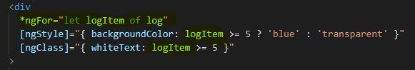
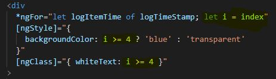

07 - Directives Practice
Challenge Includes the following:
Challenge Results - Using Incrementing Number
Secret Password = tuna
Challenge Results - Using Index and Timestamp
Secret Password = tuna
The key difference between simple incrementing in top image and use of index on the bottom image
Is the use of the second let in ngFor...where "let i = index"...and then the use of i to allow formatting
